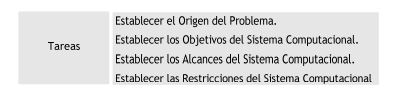
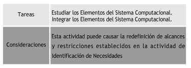
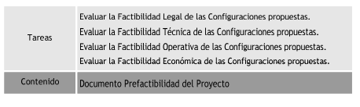

Universidad Nacional Abierta y a Distancia - UNAD - Diseño de sitios web
Todos los derechos reservados - 2018
El proceso de Definición del Proyecto comprende las actividades de la Ingeniería de Sistemas necesarias para establecer las bases del proyecto a realizar. El proceso de Desarrollo de Software está enmarcado dentro de un modelo de desarrollo (Modelo Espiral, por ejemplo) que resulta ser altamente dinámico y flexible, ya que facilita el desarrollo de diversos tipos de productos de software, permite la incorporación de técnicas modernas de ingeniería de software, no presenta rigidez frente a los cambios y puede utilizarse para desarrollar un producto de software completo o por componentes individuales.
La definición del proyecto, está orientado a establecer sus bases, este está compuesto por tres actividades:
Objetivo: Identificar y estudiar las necesidades del usuario a fin de establecer el origen del problema, objetivos, alcances y restricciones del sistema computacional a construir
Objetivo: Establecer las posibles configuraciones del sistema computacional concordantes con los objetivos, alcances y restricciones establecidos en la actividad anterior.
Objetivo: Evaluar la factibilidad de la implantación de las alternativas de configuración del sistema computacional propuestas.
Universidad Nacional Abierta y a Distancia - UNAD - Diseño de sitios web
Todos los derechos reservados - 2018